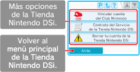

● Vincular cuenta del Club Nintendo
Si eres miembro del Club Nintendo, podrás vincular a tu cuenta de la Tienda Nintendo DSi una dirección de correo electrónico utilizada previamente en el sitio web de Nintendo. Visita el sitio web de Nintendo en
www.nintendo.com/countryselector.
Si vinculas una dirección de correo electrónico a tu cuenta de la Tienda Nintendo DSi podrás optar a una serie de ventajas. Para obtener más información, visita
www.club-nintendo.com.
● Contrato del Servicio de la Tienda Nintendo DSi
Consulta el Contrato del Servicio de la Tienda Nintendo DSi para ver información detallada acerca de los términos y las condiciones relativas al uso de los servicios ofrecidos mediante la Tienda Nintendo DSi.
● Borrar tu cuenta de la Tienda Nintendo DSi
Si borras tu cuenta de la Tienda Nintendo DSi, perderás tu saldo actual de Nintendo DSi Points y todos los contenidos descargados. Tampoco podrás volver a descargar programas que hayas descargado y borrado con anterioridad.